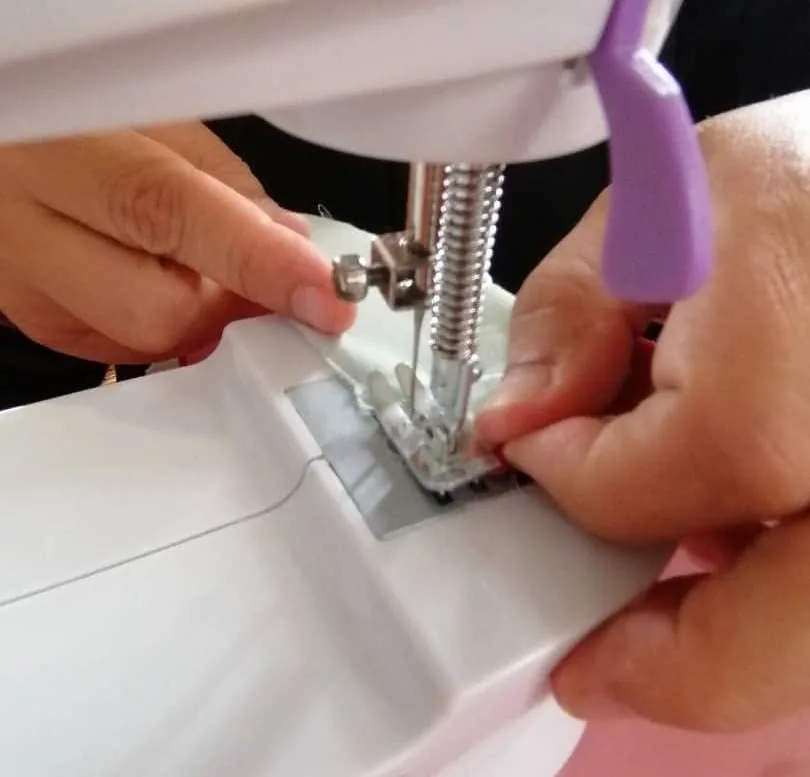
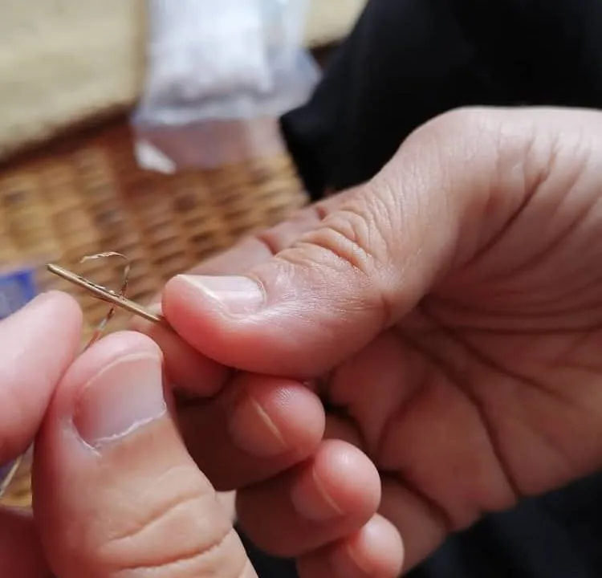
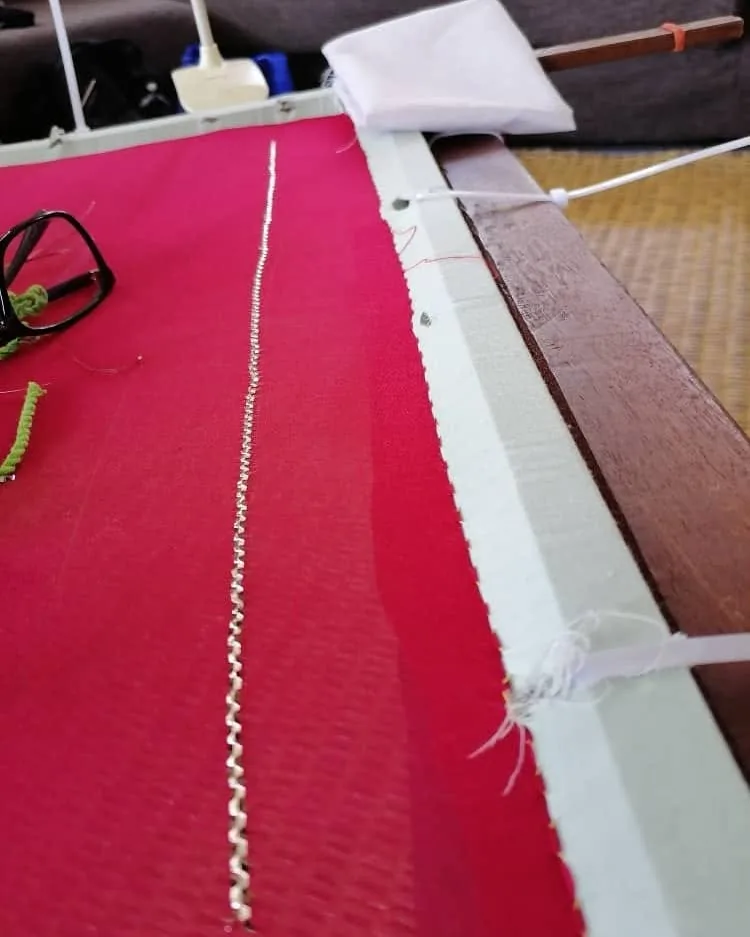
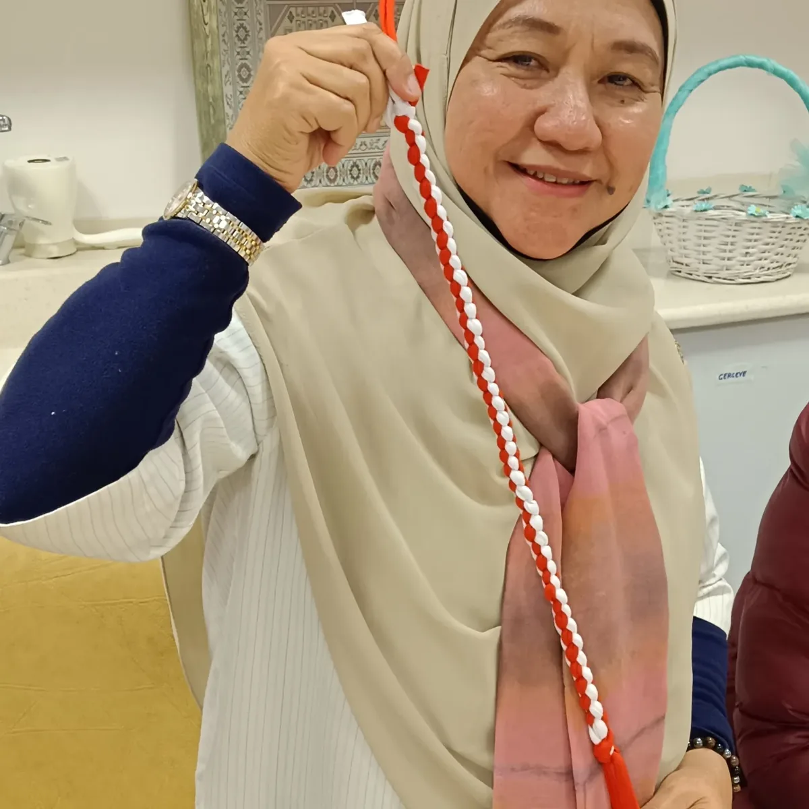

Finished for a customer's engagement.
Keringkam master artisan, Sarawak
Master artisan, cultural bearer and heritage advocate. Norinda stitches keringkam to order, and teaches it so the next generation can carry it on.
Move across the gauze to stitch. Click to scatter a star.
ScrollKeringkam motifs are placed by counting the threads of the gauze.
A selayah in black gauze and gold, 2022
In her words
Jaga dan pelihara warisan Sarawak untuk anak cucu kita."Look after Sarawak's heritage, and keep it for our children and grandchildren." Norinda, after a class in 2026.

Norinda makes keringkam, the gold-thread embroidery of Sarawak's Malay community, by hand and to order. A single selayah can take months. In 2022 she finished her fourth of the year stitching only at weekends, slowly but surely.
Today she also teaches. Her classes take students from their first threaded needle to finished samplers, and her study of craft has taken her as far as Türkiye.
From a veil for your akad nikah to a class for your university, every piece of work is handmade and personal.
Pieces stitched by Norinda, and samplers finished by her students. Drag to look through them.
Finished for a customer's engagement.

Scattered flowers inside a climbing vine.

A long piece, checked in daylight.

Stars across the field, a border at the hem.

A lattice border with scattered stars.

Red gauze, a first border and stars.

Finished in class, June 2025.

The pedangan holds the gauze taut.
This is how Norinda's classes unfold, week by week, from a student's first threaded needle to a finished sampler.
01Week one
Getting to know the materials and the frame before the first stitch.


02Week two
By the second week, students stitch with the correct technique. Neatness comes with practice, and Norinda's advice is simple: embroider with the right technique.


03Week three
In the third week, students try "membalas tali aek", working the flowing water-channel border along the gauze.


04Finished
Students in Norinda's MPU 3442 class finished samplers of their own in June 2025, then prepared a special project with the community at Lubok Antu.
See upcoming classes



Cultural exchange, 2025
In 2025 Norinda joined a study visit to Kayseri University in Türkiye, at its Mustafa Çıkrıkçıoğlu Vocational School. She met teachers and students of traditional handicrafts and tried their braiding and needlework for herself.
It is the furthest keringkam has travelled with her so far, and a reminder that heritage grows when it is shared.
Three weeks from the basics to the tali air border.
Free courses at UNIMAS City Campus, Kuching, and UNIMAS Samarahan.
Students finish their own pieces and plan a project in Lubok Antu.
A study visit to Türkiye's craft students and teachers.
A two-day class with UNIMAS Business School.
Words from the frame
Sulam dengan teknik yang betul.Norinda's advice to her students, 2026
Bersatu hati dan bekerjasama.On protecting the keringkam we love, 2026
Jangan ada perasaan iri hati dan sombong diri antara penyulam.To her students after National Training Week, 2026
Slowly but surely.On finishing her fourth selayah of the year, stitched at weekends, 2022
Notes from classes, commissions and travels. Each one opens on Instagram.
Commissions and classes
Tell Norinda about the occasion, the piece or the class you have in mind. A selayah or selendang can take months, so it helps to ask early.